Jay Dolan’s List on Chapter 4 of the Da Vinci Code

Chapter 4
Jay Dolan
Ellie Molyneux
Prow of a battleship
Glass pyramid
The Louvre
Sepulchral
Aura
Tread-lighting
Fountains at the Louvre
President Francois Mitterand
666
Satan
Ocher
En quarantaine
Sully Wing
American University of Paris
La Pyramide Inversee
Entresol
The Denon Wing
Penchant
Wicca
Curator
Labrys axes
Greek shrine in Delphi
Tjet ankhs
Sistrum rattles
Horus
Isis
Phobia
Black onyx
Crux gemmata
Twelve apostles
Alcove
DCPJ
Messieurs
La Grande Galerie
Louvre most valuable Italian masterpieces
Polaroid
Medieval
Guillotine
Polished parquet
Nape
Harris tweed jacket
Carbon
Deionized
Coal Filter Dehumidifiers
Carbon Dioxide
Widow’s Peak “A V-shaped point formed by the hair near the top of the human forehead.” The saying goes that women who have a widow’s peak will live longer than their husbands and therefore become widows. Males also can have this feature which is called a widower’s peak. According to the research of the cited website, the term comes from the idea of a “mourning hood” or “widow’s hood” that dates back to 1530.
“Where did the term ‘widow’s peak’ come from?” http://ask.yahoo.com/ask/20021227.html September 17, 2004.
This website also cites:
www.dictionary.com September 17, 2004
http://www.word-detective.com/101800.html September 17, 2004
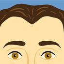
http://test3-sftt.terc.edu/units/heredity/common_content/images/s3_widows_peak_yes.gif

Prow of a battleship- “The forward part of a ship’s hull; the bow.”
Glass pyramid Designed by a Sino-American, Pei, and erected in 1983, the Glass pyramid has created much controversy. It rests in the Napoleon Court at the entrance of the Louvre Museum.
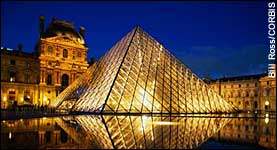
http://www.telegraph.co.uk/travel/main.jhtml?xml=/travel/Supplements/DreamCities/etdcparis.xml September 17, 2004
http://www.louvre.fr/anglais/palais/grandlou/pyramide.htm September 17, 2004
The Louvre See Prologue.
Sepulchral “Of or pertaining to burial, to the grave, or to monuments erected to the memory of the dead; as, a sepulchral stone; a sepulchral inscription.” “Of or relating to a burial vault or a receptacle for sacred relics.”
http://dictionary.reference.com/search?q=Sepulchral September 17, 2004
Aura “An invisible breath, emanation, or radiation.” “A distinctive but intangible quality that seems to surround a person or thing; atmosphere.”
http://dictionary.reference.com/search?q=aura September 17, 2004
Tread-lighting Illumination that is designed to allow someone to navigate a dark room without actually lighting up the room.
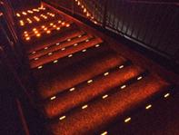
http://www.tempoindustries.com/Images/Dimmer.jpg September 17, 2004

Fountains at the Louvre
http://www.oxygene.demon.co.uk/abroad/france/PYRAMID1.jpg

President Francois Mitterand Longest serving president since Napoleon III. He served as president of France from 1981-1995. He died in 1996.
http://news.bbc.co.uk/olmedia/350000/images/_351815_mitterand150.jpg

http://www.pbs.org/newshour/bb/remember/mitterrand_1-8b.html September 17, 2004
http://www.biography-dictionary.com/Francois-Mitterand.htm September 17, 2004
666 Originated in the Babylonian Civilization. The Babylonians assigned numbers to all of their gods. (1 to 36) The sun god, or their supreme god, received a number that was the sum of all the numbers of the other gods. That number is 666. When the Persians and the Medes conquered the Babylonians they brought their own priests so the number 666 was seen as the enemy’s number. http://www.666man.net/666ReligionHistoryOverview.html
Satan “Satan typically represents an evil being that is opposed to God and those who seek to do God's will. Most Christians believe the devil is an angel who was kicked out of heaven to roam the earth after leading a rebellion against God.”
http://www.faithnet.org.uk/KS4/Believing%20in%20God/satan.htm September, 17 2004
Ocher Any of several earthy mineral oxides of iron occurring in yellow, brown, or red and used as pigments.
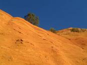
http://www.lindapaul.com/link%20images/ocher.JPG

http://dictionary.reference.com/search?q=ocher
En quarantaine In quarantine http://ets.freetranslation.com/
Sully Wing One of the three wings of the Louvre. The other two Wings are called Denon and Richelieu. http://www.paris.org/Musees/Louvre/basics.html
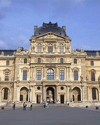
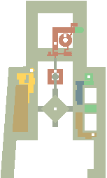
http://www.louvre.or.jp/louvre/QTVR/images/MAP-ES.GIF

http://www.paris.org/Expos/Stereo/sully.html
American University of Paris See Chapter 1
La Pyramide Inversee- “Architects Pei, Cobb Freed and Partners created a 'Pyramide Inversee' of laminated glass to bring light down to the Louvre's new underground complex and mark the intersection of two main walkways, orienting visitors towards the museum entrance. The Inverted Pyramid forms part of the Phase II government renovation of the most famous museum in Paris.”

http://www.dupont.com/safetyglass/lgn/stories/0409.html
Stalactite They are dripstones that hang down from the ceilings of caves. They are formed by water dripping from cracks in the ceilings. “In the time between two drops, some amount of carbon dioxide (CO2) goes from the water into the caves air. Without this CO2 the water is not able to keep all its limestone, and a tiny amount of limestone crystallizes on the ceiling.” After a very long time, a stalactite forms.
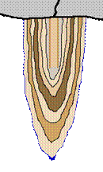

http://www.showcaves.com/english/explain/Speleothem/Stalactite.html
Entresol “The floor just above the ground floor of a building; a mezzanine.”
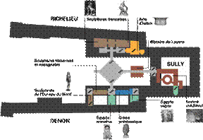
http://www.map98.com/maps/lfg/entresol.gif

http://dictionary.reference.com/search?q=Entresol
The Denon Wing The Denon Wing holds some of the most famous pieces of artwork in the Louvre. It holds Egyptian antiquities, Greek and Roman sculptures, as well as Italian Renaissance masterpieces. The Mona Lisa is also located in the Louvre. Also, Virgin of the Rocks and The Virgin and Child with St. Anne is in the Denon Wing. The Crown Jewels of France can also be found in the Denon Wing.
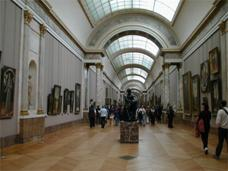
http://enabledonline.com/BackIssues/January2001/news3.html
http://www.geocities.jp/kitagawa_masayuki/Scenic_Photos/France/Paris_Louvre_DenonWing.htm
Penchant “A definite liking; a strong inclination.”
http://dictionary.reference.com/search?q=Penchant
Wicca “Wicca is a religion based, in part, on ancient, northern European Pagan beliefs in a fertility Goddess and her consort, a horned God.” In spread in the 1950’s and is predominantly a Western movement. Followers generally practice witchcraft and worship nature. Gerald Brousseau Gardner, a retired British Civil Servant, has been attributed with creating the origins of Wicca. Even though there is variation within the Wiccan community, most followers practice the same set beliefs and practices. “They believe in the Goddess, respect nature, and hold both polytheistic and pantheistic views. Most Wiccans accept the so-called Wiccan Rede, an ethical code that states ‘If it harm none, do what you will.’” Wiccans practice meditation and participate in rituals throughout the year. They celebrate the new and full moon, as well as the vernal equinox, summer solstice, and Halloween. They call Halloween Samhain. “Wiccan rites include invoking the aid of the deities, practicing ceremonial magic, and sharing a ritual meal.”
http://www.religioustolerance.org/witchcra.htm, http://search.eb.com/eb/article?tocId=214728
Curator See Prologue.
Labrys axes A double headed ritual axe found in Minoan depictions of the Mother Goddess. The word originated in Minoan but it has the same root as the Latin word labus, or lips. Labrys appear in Norse, Greek, and African religious objects. Labrys are often associated with feminine symbols. They have also been found on medieval charms that were used to attract women. In present day, lesbians use labrys as a sign of solidarity and identity.
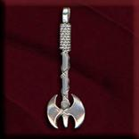
http://www.amuletsfromavalon.com/goddess/labrys.jpg

http://altreligion.about.com/library/glossary/symbols/bldefslabrys.htm
Greek shrine in Delphi. Site where the ruins of the Temple of Apollo are located. Archaeological work is done there and it is located near the Gulf of Corinth, at the foot of the twin peaks of Mt. Parnassos. The Temple of Apollo makes up most of the site, but there is also a theater, a stadium, and many monuments. Delphi was not a city. It was a religious and political site. Pilgrims seeking guidance would travel to the shrine and sacrifice a sheep or goat. Then they would submit a question to a Priest who gave the question to and oracle. The oracle would sit over a hole in the temple and inhale fumes until she went into a trance. The Priest would then interpret the noises made into cryptic verse. Prophesies were usually very vague, but they were taken very seriously and often determined the actions of the empire.
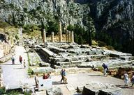
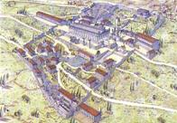
http://www.abrock.com/Greece-Turkey/Olym.html
Tjet ankhs An ankh is an Egyptian hieroglyph which means “life.” It is a cross surmounted by a loop. In Latin this is known as the crux ansata (handle-shaped cross). It is frequently found in the inscriptions of ancient tombs. Gods and pharaohs are depicted holding it. The ankh is also associated with happiness and health. It has been referred to as a magical knot and thought to have originated from the shape of a sandal strap.
http://home.planet.nl/~wmt/ankh.gif

http://search.eb.com/eb/article?tocId=9007659&query=ankhs&ct=
Sistrum rattles A percussion instrument consisting of a wood, metal, or clay frame set loosely with crossbars. Usually there are jingles that hang from these crossbars. The rattles sound when it is shaken. Ancient Egypt used these rattles and made them into the shapes of temples, or a closed-horseshoe shape. The sistrum was first used in the cult of the Goddess Hathor. Then followers of the cult of Isis used them extensively. Sistrums also existed in Western Africa and among two American Indian tribes.
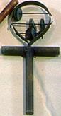
http://www.mingyuen.edu.hk/history/2egypt/egypt-app/music/sistrum.jpg

http://search.eb.com/eb/article?tocId=9068009&query=Sistrum%20rattles&ct=
Horus An Egyptian God that is usually depicted as a Hawk or Falcon. The Ancient Egyptians believed that their Pharaoh was the human representation of Horus. Horus is also thought of as a creator God.
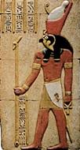
http://grenier2clio.free.fr/egypte/pic/horus.jpg

http://www.pantheon.org/articles/h/horus.html
Isis “Isis is the feminine archetype for creation - the goddess of fertility and motherhood. She has gone by many names and played many roles in history and mythology - as goddess and female creator.”
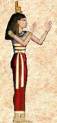
http://www.crystalinks.com/isis.html
Phobia “A persistent, abnormal, and irrational fear of a specific thing or situation that compels one to avoid it, despite the awareness and reassurance that it is not dangerous.”
http://dictionary.reference.com/search?q=Phobia
Black onyx It is a form of quartz. It is a chalcedony silica mineral in which layers of white alternate with layers of black. Onyx is also known as silicon dioxide. There are several different varieties. Some are classified as semiprecious gemstones and are used in jewelry. Sometimes it is artificially colored with mineral salts or dyes to bring out the differences in color. Most if these stones come from India and South America. During the Roman Empire onyx included alabaster, chalcedony, and onyx marble.
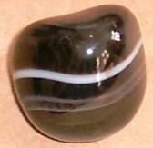
http://www.occult-shop.co.uk/black-banded-onyx.JPG

http://search.eb.com/ebi/article?tocId=9276193&query=Black%20Onyx&ct=
Crux gemmata The crux gemmata, or the cross with precious stones, is decorated with 13 gems. The gem in the center of the cross represents Christ while the other 12 represent each of his twelve apostles. It is a symbol for the Christian faith.

http://odur.let.rug.nl/~martens/ovafb/afb4e2.jpg

http://www.mcuniverse.com/Symbols.1275.0.html
Twelve apostles They are the twelve faithful followers of Jesus. They included:
Andrew, Peter, James Zebedee, John Zebedee, Philip, Nathaniel, Matthew, Thomas, James Alpheus, Judas Alpheus, and Judas Iscariot. http://www.ubook.org/esg/esg139.html
Alcove- “A recess or partly enclosed extension connected to or forming part of a room.” or “A secluded structure, such as a bower, in a garden.”
http://dictionary.reference.com/search?q=Alcove
DCPJ- See Chapter 1.
Messieurs Sirs or Misters.
Ne nous derangez pas sous aucun pretexte. Entendu? Do not disturb us under any circumstances. Understand?
La Grande Galerie The Grand Galerie. (See Louvre.)
Polaroid See Chapter 1.
Guillotine- A method of putting someone to death that involves the decapitation of the victim. A sharp blade is positioned above the victim’s neck and the blade is let loose which allows it to deliver a fatal blow that severs the head from the body.
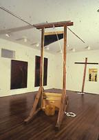
http://www.feldmangallery.com/media/komarmelamid/knmexh_80/guillotine-01.jpg

http://www.metaphor.dk/guillotine/Pages/History.html
Polished parquet “Inlay of wood, often of different colors, that is worked into a geometric pattern or mosaic and is used especially for floors.”
http://dictionary.reference.com/search?q=parquetry
Nape “The back of the neck.”
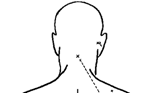
http://www.impiousdigest.com/lbj/Nape.gif

http://dictionary.reference.com/search?q=nape
Harris Tweed jacket See chapter 1.
Carbon A natural element of great abundance in nature which can be found in many organisms and objects, including charcoal. Ref: http://dictionary.oed.com/cgi/entry/00033245?query_type=word&queryword=carbon&edition=2e&first=1&max_to_show=10&sort_type=alpha&result_place=1&search_id=DCJ7-toLeS2-7086&hilite=00033245 (9/20/04).
Deionized – the condition of having ions removed. Ref:
Coal Filter Dehumidifiers The novel states that this is a dehumidifier that runs constantly to counteract the corrosive effects on paintings that carbon dioxide has.
Carbon Dioxide A carbon compound exhaled as a waste product of metabolic processes in the body; a gas with corrosive effects on paintings.